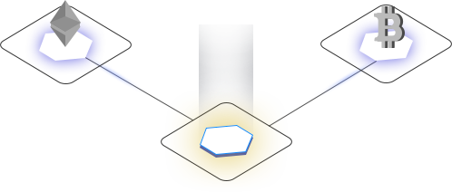

愿景
打造集文化传媒、金融服务、产业孵化一体的传媒科技集团为愿景

STARTHALO
通证经济与共识社群践行者
公司介绍
星环创世（北京）传媒科技有限公司是由来自区块链先行企业、区块链产业联盟、海归区块链创业者等发起。在整合资源、深化平台建设的基础上，提供基于区块链的深度行业解决方案，从技术、资金、资源、优质项目孵化等多方面全力推动中国区块链行业发展和项目落地，成为通证经济与共识社群践行者。
愿景
打造集文化传媒、金融服务、产业孵化一体的传媒科技集团为愿景
定位
定位在创意和科技驱动型区块链传媒科技集团，专注区块链行业社区和创意市场公关服务。
产品业务
区块链为技术基础的内容传播平台
即时通信社群管理工具、个人数据银行工具、数字资产管理工具、原创内容平台已建立和运营自媒体内容矩阵，如通证派元道，星环财经
商业模式
依托区块链技术为基础的分布式即时通信和媒体平台应用，实现分布式内容存储、数据存储与确权，最终实现个人数据资产变现
联系方式

公众号

公众号